原文连接:https://www.cnblogs.com/jiyu-hlzy/p/11745221.html
- 集合定义 集合的交 并 差
- 常见的运算符的用法
- 字典的定义 字典的 get items keys pop popitem update 方法
- 三种逻辑运算
集合
集合特性
唯一性：不存在两个相同的元素
无序性：不存在索引
可变性：set集合是可变对象
两种定义方法（具有唯一性，自动去重）
直接定义 用大括号

set() 类型转换
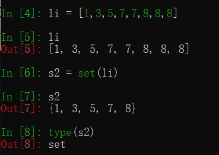
三种运算
s1 & s2 交集
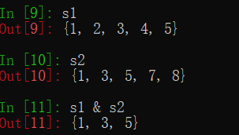
s1 | s2 并集
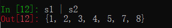
s1 - s2 差集（补集，前一个有的，后一个没有的）
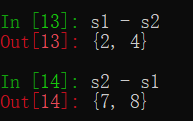
集合方法
增
add(值) 按Ascall码排序
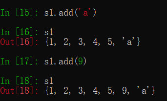
删
pop() 不能填参数，默认从第一个开始删除
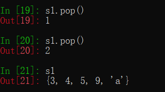
remove（值） 填需要删除的值
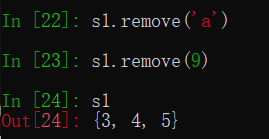
改
update(可迭代对象，目前理解为序列类型) 添加可迭代对象，并更新
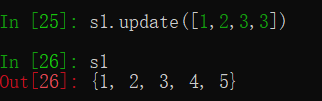
查
s1.isdisjoint(s2) 有交集返回False，无交集返回True
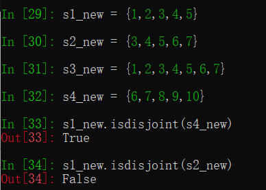
s1.issubset(s2) 判断是否包含于 subset：子集
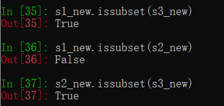
s1.issuperset(s2) 判断是否包含 superset：超集
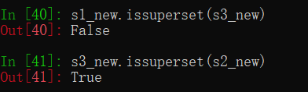
字典
字典特性
键唯一性：字典中的键具有唯一性，不存在两个相同的键
有序性：字典从python3.6开始有序的
可变性：字典是可变对象，但是字典的的键必须是不可变对象
两种定义方法
直接定义、大括号、键值对形式
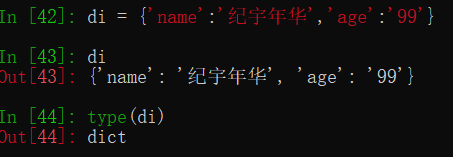
使用dict函数
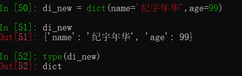
修改和添加
有这个键就修改，没有就添加
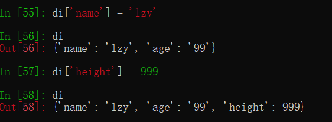
字典方法
增
copy()
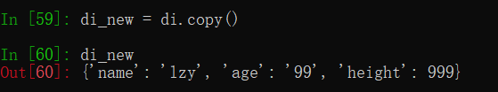
setdefault('name','xxx') 有则查，无则增
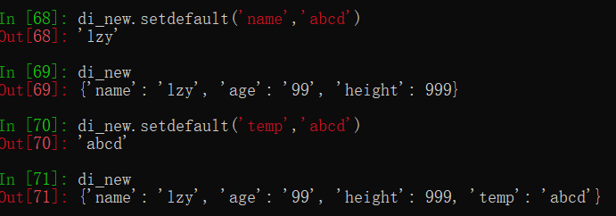
dict.fromkeys(a，b) 返回新字典 a : 以序列 a中元素做字典的键 b：所有键的初始值，默认为None
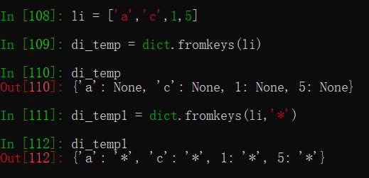
删
pop('键') 一般使用这个，根据键删除对应的数据
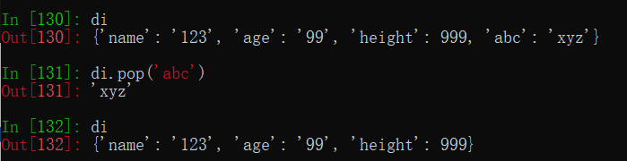
popitem（） 删除最后一个
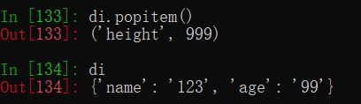
clear() 清空字典

改
update({键:值}) 有这个键就修改，没有就添加 ，和 di [键] = 值 是一样的效果
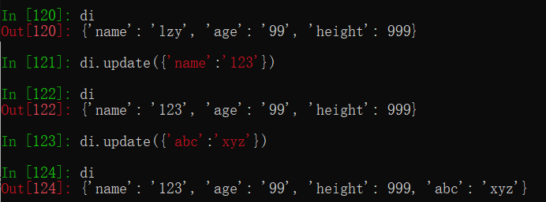
查
get（键） 根据对应的键查值
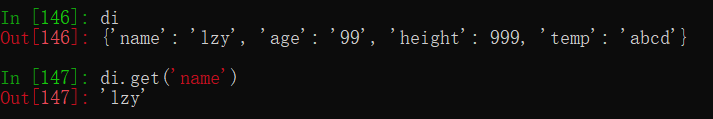
keys() 查询所有的键
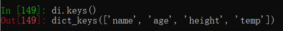
values() 查询所有的值
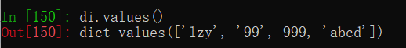
items() 查询所有的键值对，返回list，可以迭代取出来
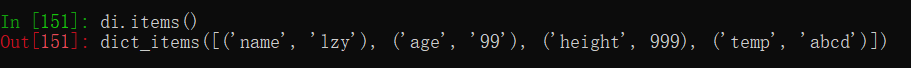
逻辑运算符
查看对象类型
type(object)
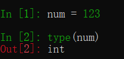
isinstance( object , 对象类型 )
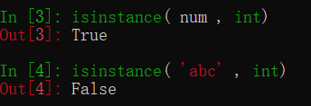
比较运算符
== 等于 != 不等于 > 大于 < 小于 >= 大于等于 <= 小于等于
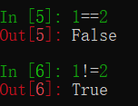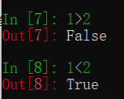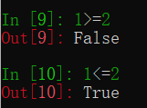
如果有多个条件
与：and 同时为真，结果才为真
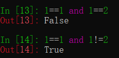
或：or 有一个为真，结果就为真
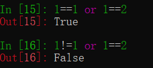
非：not 取反值
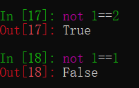
Python中的运算符
幂运算：**
算术运算符：+ - * / %
比较运算符：> < >= <= == !=
赋值运算符：= += -= *= /= %= //= **=
逻辑运算符：not and or
成员运算符：in not in
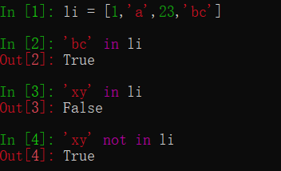
身份运算符：is is not 根据内存地址来判断
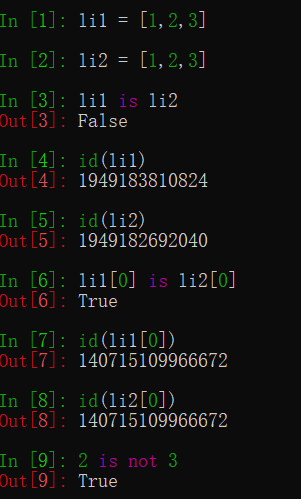